OPGAVE
Vi skulle finde en virksomhed med en hjemmeside, hvor designet kunne forbedres, og udvikle vores eget bud på et redesign.
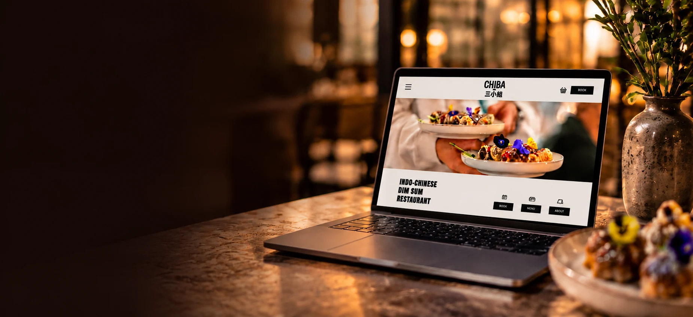
2026
Redesign af Chibas hjemmeside med fokus på restaurantens visuelle identitet, stemning og gæsteoplevelse.
↓ SCROLL NEDVi skulle finde en virksomhed med en hjemmeside, hvor designet kunne forbedres, og udvikle vores eget bud på et redesign.
I en gruppe udviklede vi et nyt design til Chibas hjemmeside. Vi ønskede at skabe et mere indbydende og iøjnefaldende udtryk, der passede bedre til restaurantens stil, stemning og identitet. Vi interviewede ejeren og tog billeder af restauranten og maden, som vi kunne bruge i vores visuelle materiale.
Visual Studio Code, Figma, Adobe Illustrator og GitHub
2 uger
Gruppeprojekt med Chiba Restaurant som case
Webdesign og hjemmeside
Se den færdige hjemmeside ved at klikke på billedet eller knappen nedenfor.
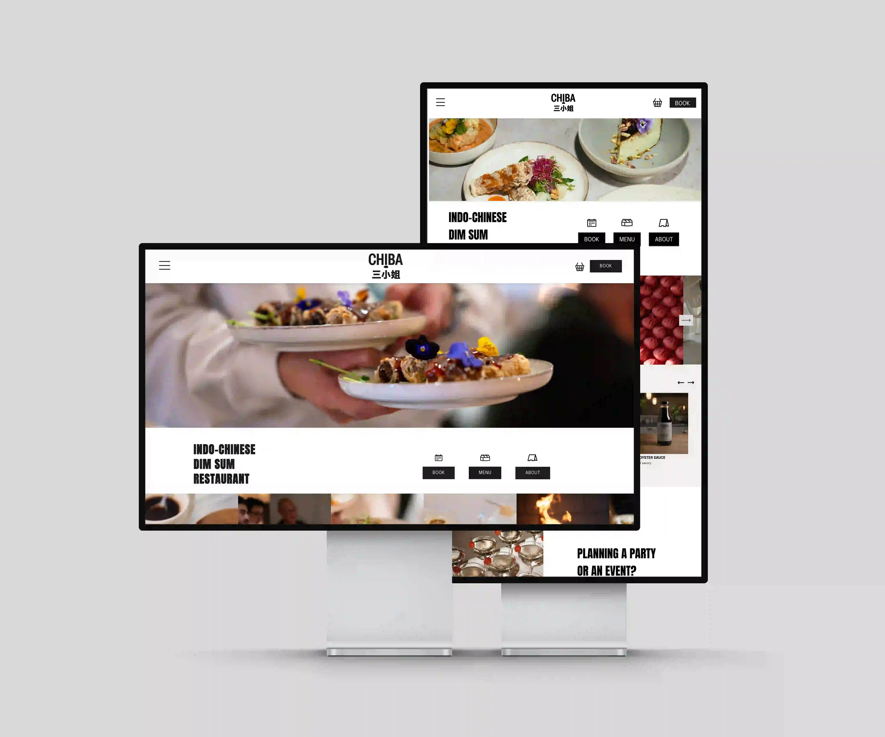
Målet var at skabe et bedre redesign af Chibas eksisterende hjemmeside, så designet i højere grad afspejlede restaurantens stil og budskab. Vi ville gøre siden mere indbydende, visuel og inspirerende for kommende gæster.
For at få en bedre forståelse af stedet interviewede vi ejeren og tog billeder af restauranten, maden og oplevelsen. Materialet blev en vigtig del af vores visuelle retning og hjalp os med at skabe et design med udgangspunkt i Chiba selv.
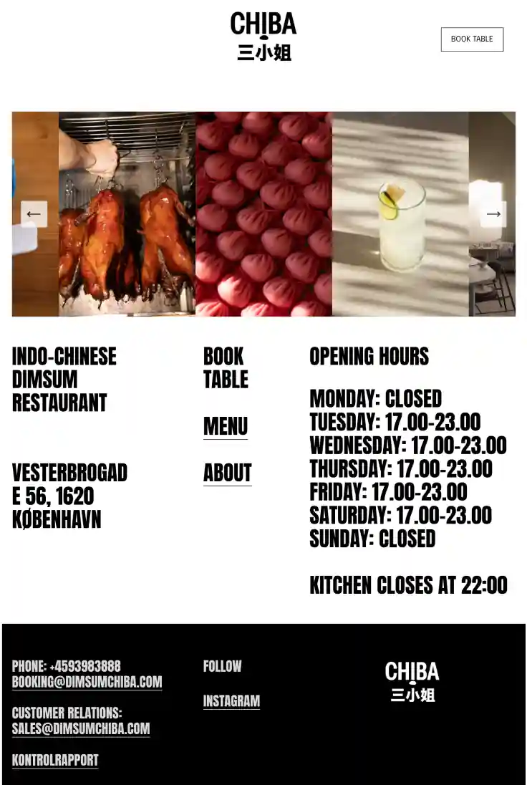
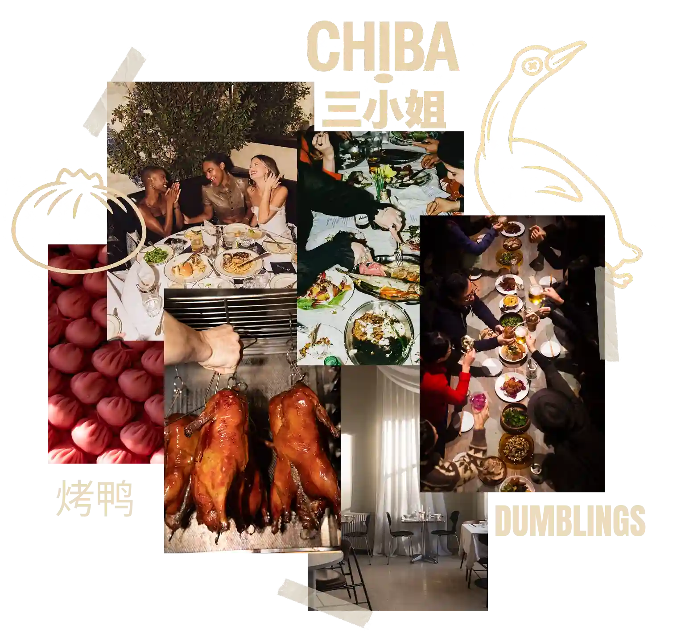
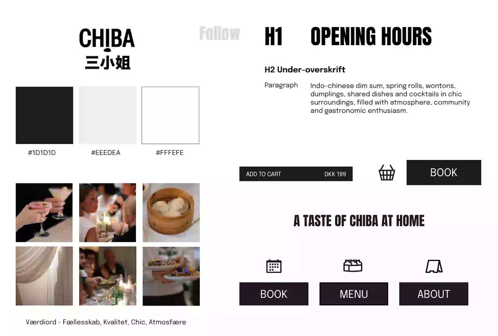
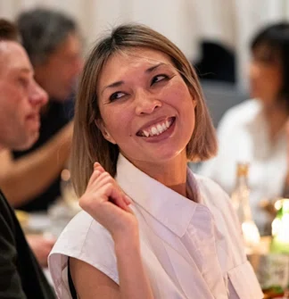
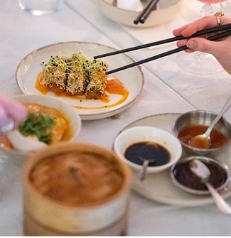
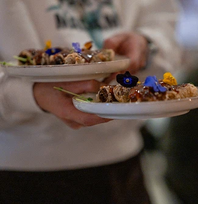
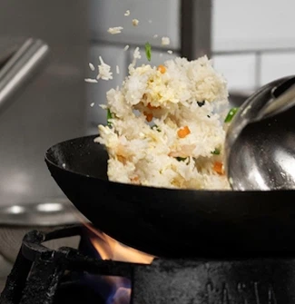
Vi tog selv billeder af restauranten og maden for at give hjemmesiden et personligt og autentisk udtryk. Billederne skulle formidle stemningen hos Chiba og give brugeren lyst til at opleve restauranten.
Efter at have fastlagt den visuelle stil begyndte vi at skitsere sidernes opbygning. Vi lavede lo-fi-wireframes for at planlægge indhold, navigation og brugerflow, før vi gik videre med det endelige design og kodningen.
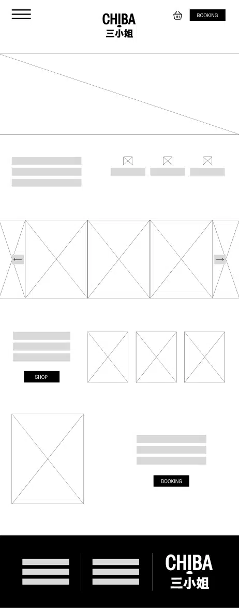
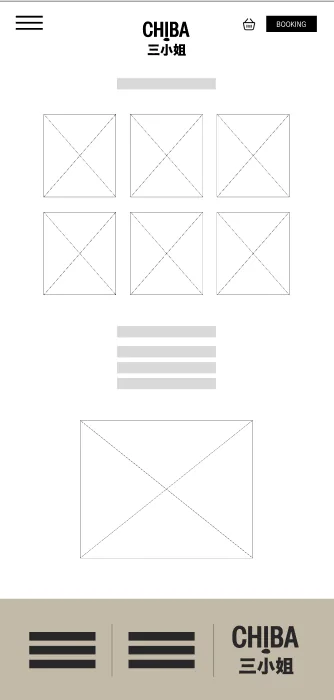
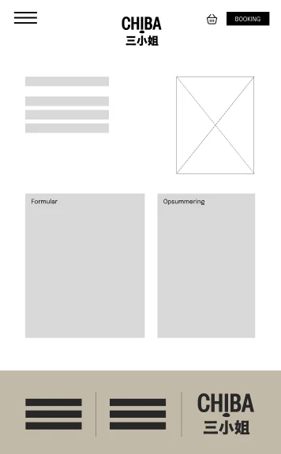
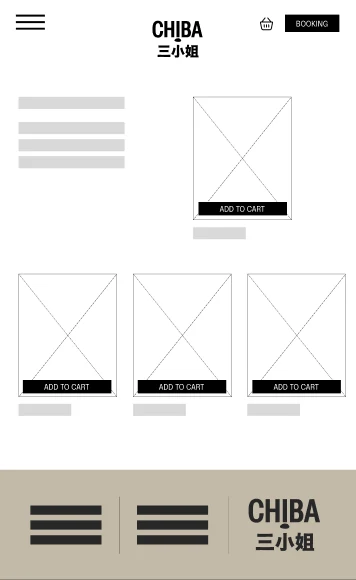
Det endelige redesign samler restaurantens visuelle udtryk på tværs af hjemmesidens sider og gør det nemmere at udforske Chiba.
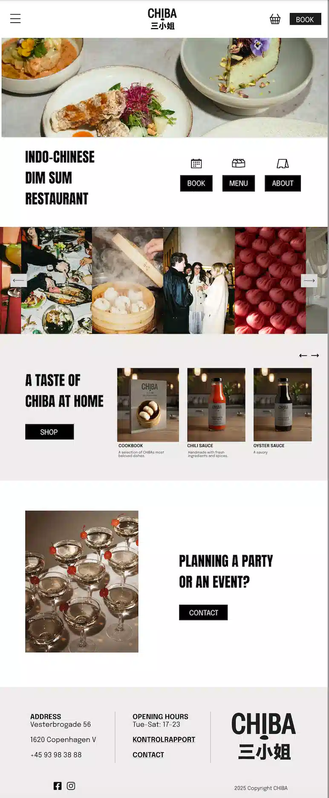
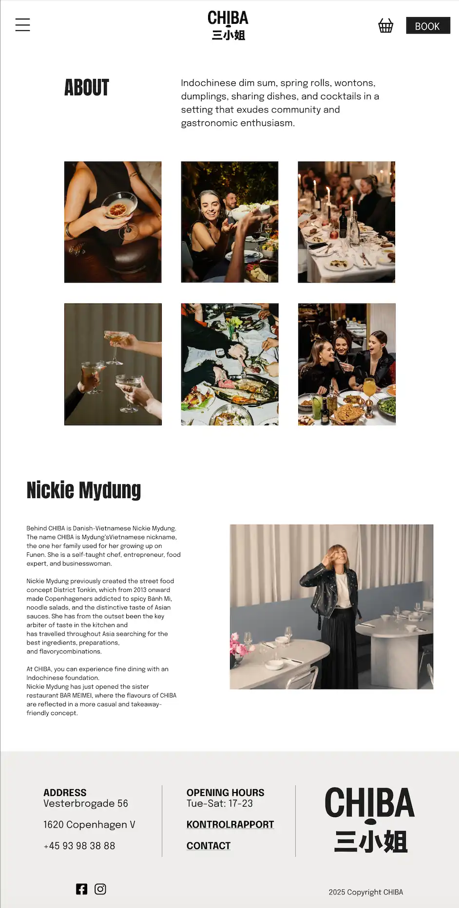
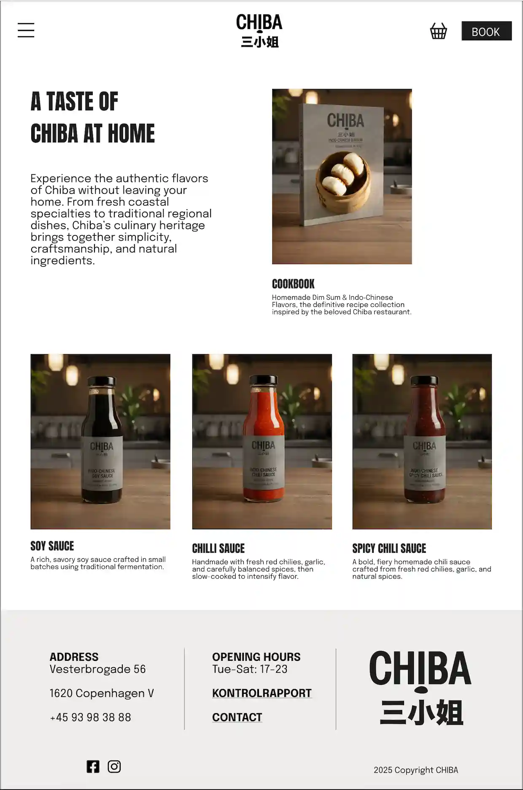